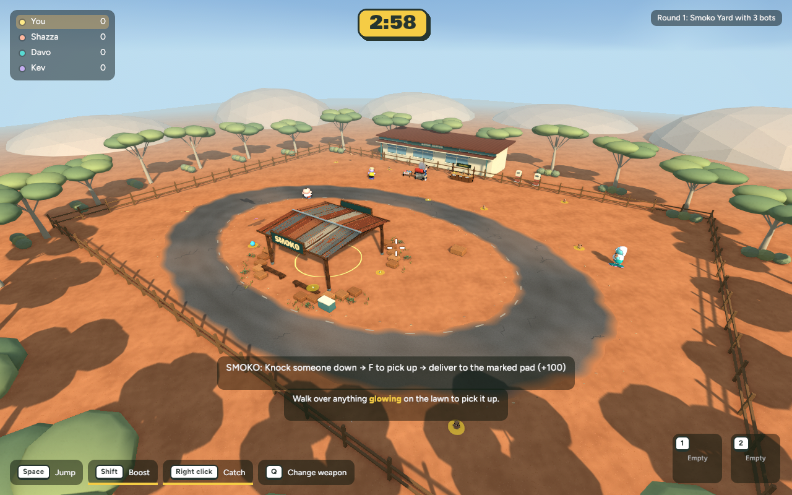
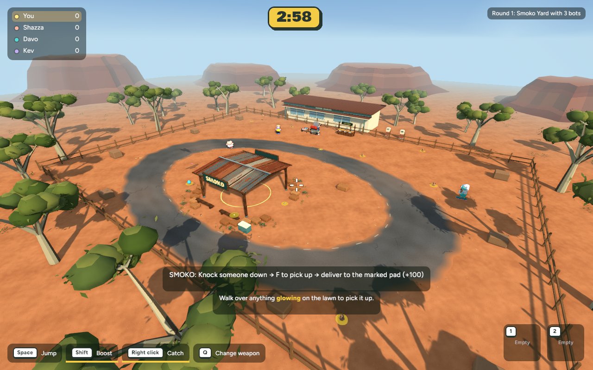
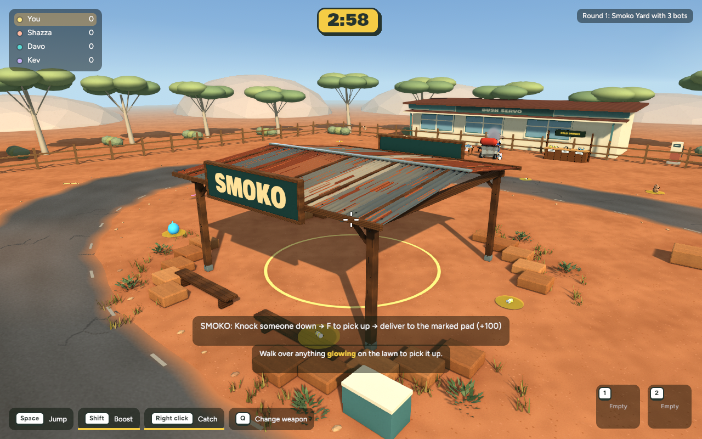
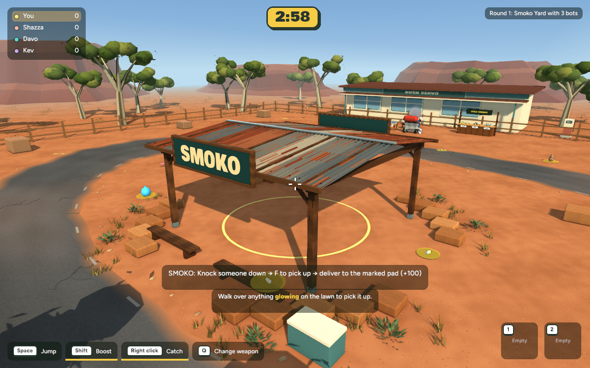
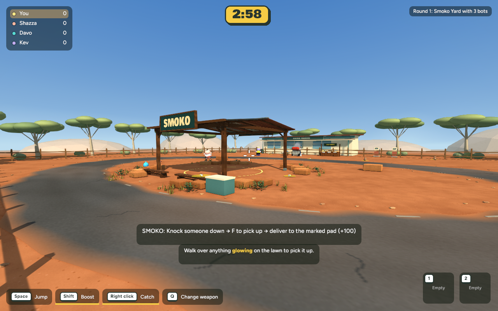
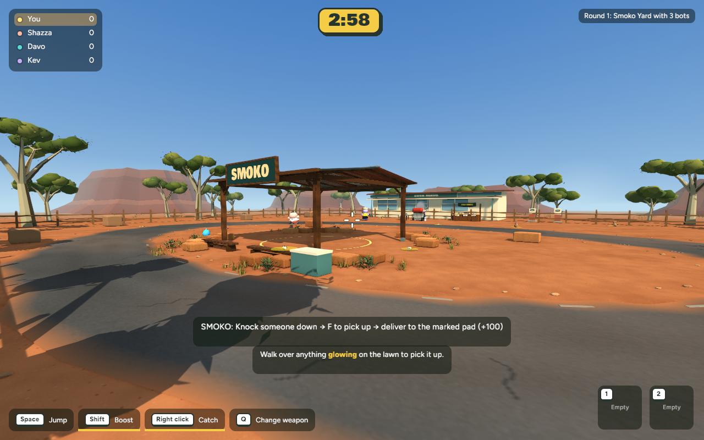
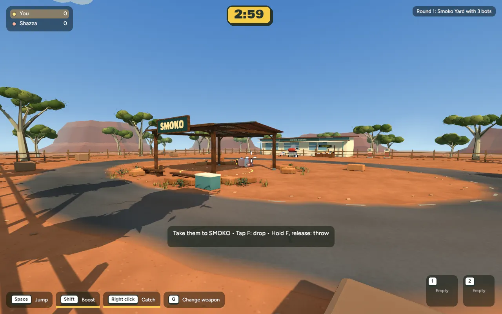

Stage 3 · 27 October 2026 · Actual native gameplay, awaiting review
40 branching gums with irregular soft crowns and tapered leaves; ten terraced ochre ridges; scattered scrub and eight solid perimeter boulders. Background trees stay beyond the fence. Perimeter cover stays clear of the circuit and delivery lanes.
Stage 2 was committed and pushed as 058ed37. This Stage 3 is uncommitted and unpublished. The live browser still has the earlier published version.







75-frame local scripted delivery: +100 awarded, carried player released. Not a new human multiplayer recording.
| View | Mean ms before → after | Change | p95 ms |
|---|---|---|---|
| overview | 8.205 → 8.558 | +4.3% | 10.226 → 10.442 |
| gameplay | 8.302 → 8.779 | +5.7% | 10.627 → 11.197 |
| close | 8.581 → 8.614 | +0.4% | 10.261 → 10.489 |
600 wall-clock intervals per camera at 1280×800, same settings after warmup; no concurrent build. Final average 114–117 FPS. The additional scenery has a modest cost (up to 0.48ms / 5.7% here). These are local samples, not GPU timings or a browser performance guarantee.
This is a stylised landscape step, not an exact match to the concept render. The building, furniture, tyre stacks, bins, eskies, finer surface detail and final lighting remain in their planned stages. Density and obstacle plan records the reference-based targets; it does not claim a precise count from occluded objects.
439 core tests pass; native release passes. Browser wasm compilation passes. Matching solid bounds verified. New boulders require protocol 19 on both peers. Backyard smoke capture passes; no new human online session or browser runtime performance measurement. Backyard capture.
Final asset: 98,036 triangles, 11 material batches, 5,036,596 bytes; no textures, transparency or vegetation simulation. It replaces the old procedural trees/hills only in the Smoko application scene.
Checkpoint and recovery instructions
cd /Users/marcus/Claude/australian-bbq/rust ~/.cargo/bin/cargo run -p bbq_app --release -- --menu